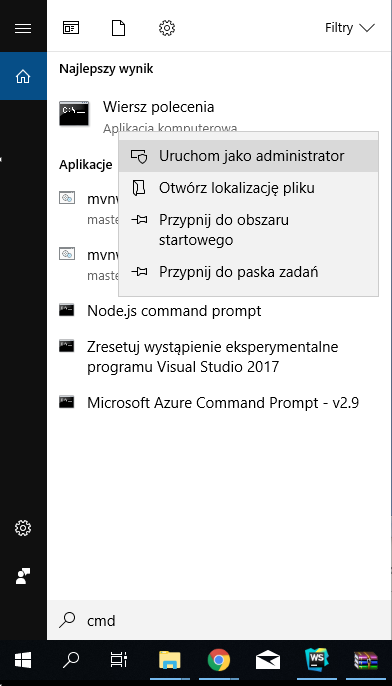
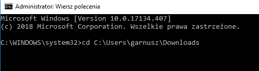
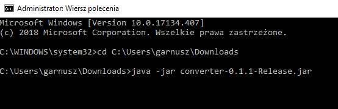
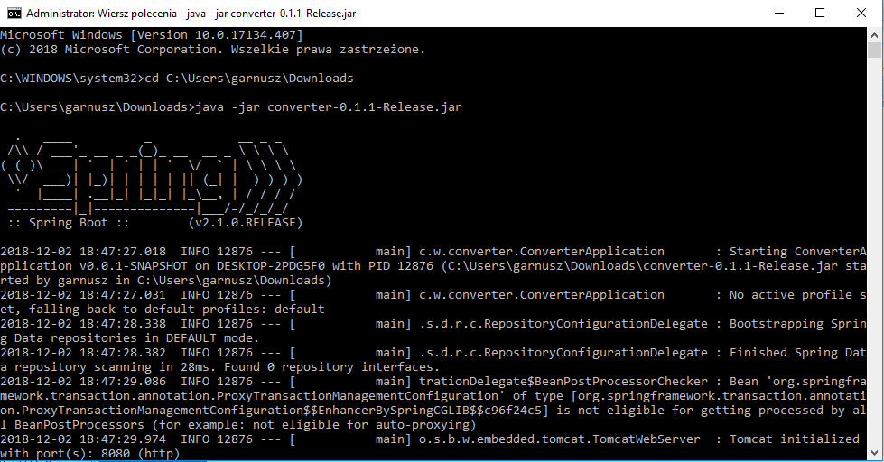
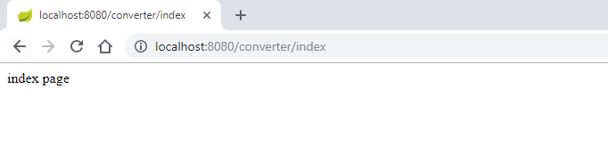

Epodreczniki Wikitext-LaTeX konwerter
Jak uruchomić?
Aby uruchomić lokalnie konwerter należy posiadać javę versję co najmniej JRE 8
Można ją pobrać ze strony Oracle:
oracle.com/technetwork/java/javase/downloads/jre8-downloadsPosiadając aktualną wersję Javy należy pobrać plik z wybranym wydaniem.
1. Po pobraniu pliku należy włączyć konsolę jako administrator: Szukaj -> wpisujemy ”cmd” -> prawym przyciskiem myszy na ikonkę -> uruchom jako administrator
2. Przechodzimy do folderu docelowego: cd ”adres folderu docelowego”
3. Uruchamiamy program poleceniem Java –jar nazwa_pliku.jar
4. Akceptujemy zgodę na dostęp do sieci. Uruchamia się nasza aplikacja: 
5. Łączymy się z programem przy pomocy programu Postman lub przez przeglądarkę korzystając z localhost na porcie 8080 z adresem: "http://localhost:8080/converter/index"
